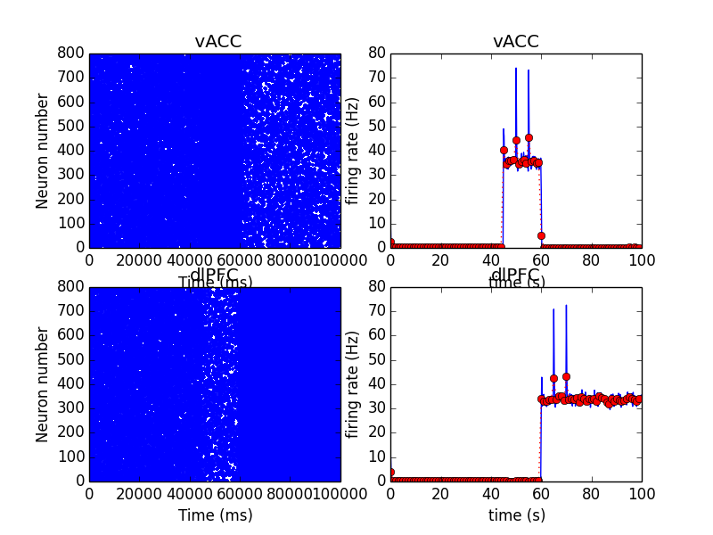

A Brian (python) model for the paper:
Ramirez-Mahaluf JP, Roxin A, Mayberg HS, Compte A (2017) A Computational Model of Major Depression: the Role of Glutamate Dysfunction on Cingulo-Frontal Network Dynamics. Cereb Cortex 27:660-679[PubMed]
is available at the journal web site in the paper's supplementary material:
http://cercor.oxfordjournals.org/lookup/suppl/doi:10.1093/cercor/bhv249/-/DC1
When run with a command like (after brian is installed):
python MDD_spiking_model.py
(after about 50 minutes on a 2013 MacBook Pro) a graph of the healthy switch in figure 2 in the paper is displayed:
